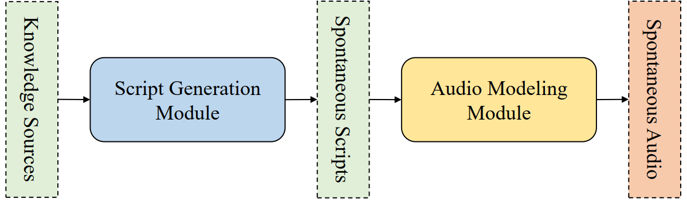

MoonCast: High-Quality Zero-Shot Podcast Generation
Zeqian Ju1,2, Dongchao Yang3, Jianwei Yu2, Kai Shen2, Yichong Leng2, Zhengtao Wang2, Xu Tan2,
Xinyu Zhou2, Tao Qin4, Xiangyang Li1
1University of Science and Technology of China
2Moonshot AI
3The Chinese University of Hongkong
4Microsoft Research
Abstract.
Recent advances in text-to-speech synthesis have achieved notable success in generating high-quality short utterances for individual speakers. However, these systems still face challenges when extending their capabilities to long, multi-speaker, and spontaneous dialogues, typical of real-world scenarios such as podcasts. These limitations arise from two primary challenges: 1) long speech: podcasts typically span several minutes, exceeding the upper limit of most existing work; 2) spontaneity: podcasts are marked by their spontaneous, oral nature, which sharply contrasts with formal, written contexts; existing works often fall short in capturing this spontaneity. In this paper, we propose MoonCast, a solution for high-quality zero-shot podcast generation, aiming to synthesize natural podcast-style speech from text-only sources (e.g., stories, technical reports, news in TXT, PDF, or Web URL formats) using the voices of unseen speakers. To generate long audio, we adopt a long-context language model-based audio modeling approach utilizing large-scale long-context speech data. To enhance spontaneity, we utilize a podcast generation module to generate scripts with spontaneous details, which have been empirically shown to be as crucial as the text-to-speech modeling itself. Experiments demonstrate that MoonCast outperforms baselines, with particularly notable improvements in spontaneity and coherence.
This page is for research demonstration purposes only.
Overview

The overall pipeline of the proposed system.
Podcast Generation
Subjective evaluation samples.We choose this pdf as the input knowledge source for Chinese podcast generation.
The podcast script is for audio demonstration purposes only and does not represent any real events or views.
| Script | Prompt 1 | Prompt 2 | Generated Speech |
|---|---|---|---|
The podcast script is for audio demonstration purposes only and does not represent any real events or views.
| Script | Prompt 1 | Prompt 2 | Generated Speech |
|---|---|---|---|
Impact of Spontaneous Script
Subjective evaluation samples. Groundtruth Script is generated by the data preparation pipeline. (May contain ASR and dirzation errors.)The podcast script is for audio demonstration purposes only and does not represent any real events or views.
| Script | Script Text | Prompt 1 | Prompt 2 | Podcast Speech |
|---|---|---|---|---|
| Groundtruth Speech | ||||
| Groundtruth Script | ||||
| Written Script | ||||
| Spontaneous Script |
More Samples
A short speech clip that features a causal flow and includes spontaneous details such as backchannels and filler words.This script is for audio demonstration purposes only and does not represent any real events or views.
| Script | Prompt 1 | Prompt 2 | Generated Speech |
|---|---|---|---|
This script is for audio demonstration purposes only and does not represent any real events or views.
| Script | Prompt 1 | Prompt 2 | Generated Speech |
|---|---|---|---|
Ethics Statement
Given the capability of our model to generate speech with high fidelity to the original speaker's voice, there exists a risk of its improper application, including the potential for deceptive voice recognition or mimicking an individual's speech. To counteract potential abuse, it is essential to devise a reliable method for detecting synthetic speech and to implement a mechanism that allows people to flag any suspected malicious use.